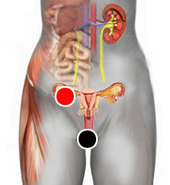

Quiste y Pólipo
Quiste:
Un quiste es una masa de células de forma más o menos esférica contenidas dentro de una membrana, el organismo produce quistes en algún tejido cuando el sistema inmune es incapaz de eliminar las células dañadas. Existen varios tipos de quistes como: granulomas periapicales, Quiste de Epidídimo, Quiste sebáceo, Quiste braquial, Quiste mamario, Quiste pilonidal, Quiste de cuerdas vocales, etcétera. Los quistes pueden llegar a ser relativamente comunes como es el caso de los quistes de agua, que pueden llevar a desarrollar el ovario poliquístico. El Quiste puede volverse maligno y dar lugar a algún tipo de cancer. Los Quistes o condilomas obedecen a la presencia de un virus patógeno asociado con dos o más bacterias. Después de impactar se puede quemar el condiloma.
Pólipos:
Un pólipo es una tumoración pediculada o excrecencia blanda de aspecto carnoso, es decir una protuberancia circunscrita visible mascroscópicamente que se proyecta en la superficie de una mucosa que cubre una cavidad. Identificándose, al igual que en los quistes, un tejido de condensación que forma su cubierta y un tejido más laxo en su interior. Pueden estar en vías respiratorias o tracto intestinal. Para que se desarrolle un pólipo se requiere al menos la presencia de un virus y una bacteria, de acuerdo al biomagnetismo.
Tanto los quistes, como los pólipos están constituidos por una cápsula o envoltura de tejido conjuntivo denso, epitelial o mucoso que requiere la presencia de virus; y en su interior encontramos una flogosis tisular, tejido laxo, incluso líquido que requiere de toxinas de etiología bacteriana.
La poliposis adetomatosa familiar es una condición genética que afecta al cromosoma 5.
Quiste de agua
Par
vagina - ovario

Hidrocele es el nombre correcto (hydros del griego agua o líquido y celes: quiste o tumor) es una acumulación patológica de líquido seroso en alguna cavidad del cuerpo.
En el hombre afecta con frecuencia los órganos sexuales ubicándose en el cordón espermático. Se forma una bolsa suave en el escroto que puede confundirse con una hernia o con un tumor canceroso (el tumor es duro e irregular). El quiste podría seguir creciendo causando molestias y requerir una cirugía.
En la mujer el quiste de agua se forma con más frecuencia en los ovarios, puede ser resultado del proceso de ovulación quiste funcional y de ser recurrente llevar al ovario poliquístico.